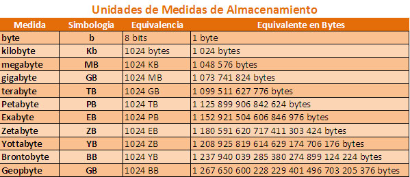

Una particularidad de los prefijos empleados en las unidades de capacidad es que no representan múltiplos de 1000 (como es común en otros tipos de unidades), sino que son múltiplos de 1024, ya que al representar información binaria es preferible que los prefijos representen alguna potencia de 2 y 1024 es 210.
